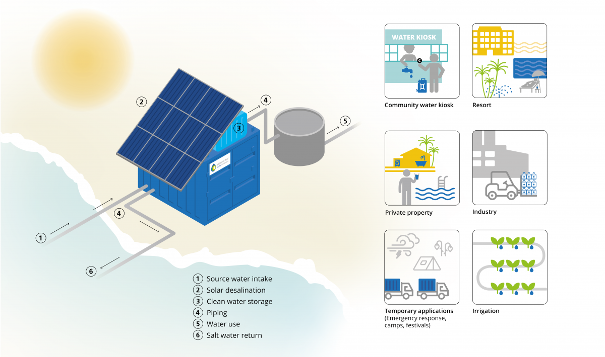
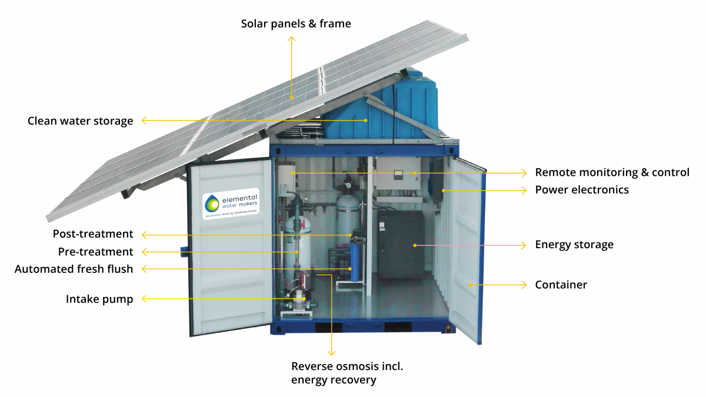

A solar-powered desalination unit produces potable water from saline water through direct or indirect methods of desalination powered by sunlight. Solar energy is the most promising renewable energy source due to its ability to drive the more popular thermal desalination systems directly through solar collectors and to drive physical and chemical desalination systems indirectly through photovoltaic cells.Direct solar desalination produces distillate directly in the solar collector. An example would be a solar still which traps the Sun's energy to obtain freshwater through the process of evaporation and condensation. Indirect solar desalination incorporates solar energy collection systems with conventional desalination systems such as multi-stage flash distillation, multiple effect evaporation, freeze separation or reverse osmosis to produce freshwater.[2
Efficient plug & play desalination by solor
Off-grid solar water supply
Add-ons.
Different sizes available for your water supply.
| Water production(liters/day) | 5.300 | 10.000 | 20.000 | 40.000 |
| Container size (ft) | 8 | 20 | 20 | 40 |
| Solar energy (kW) | 5,7 | 9,4 | 19,1 | 38,3 |
| Energy consumption (kWh/m³) | 3,0 | 2,7 | 2,7 | 2,7 |
| Feed water TDS | 3.000-40.000 | 3.000-40.000 | 3.000-40.000 | 3.000-40.000 |
| Weight incl. container (kg) | 2.400 | 4.300 | 6.300 | 11.700 |
Different Types of unit for different need
While the intermittent nature of sunlight and its variable intensity throughout the day makes desalination during nighttime challenging, several energy storage options can be used to permit 24 hour operation. Batteries can store solar energy for use at night. Thermal energy storage systems ensure constant performance at night or on cloudy days, improving overall efficiency.[8] Alternatively, stored gravitational energy can be harnessed to provide energy to a solar-powered reverse osmosis unit during non-sunlight hours.
‘’There are four major issues in the provision of potable drinking water in Southeast Asia: water cost, quality, access, and environmental impact. Working with EWM technology we are able to invest locally into decentralized water production solutions that overcome each of these challenges. Starting in the Philippines, regions where we operate can now enjoy affordable high-quality water that has been produced using a sustainable method, in line with our vision.’’
‘’Our community was faced with a great water problem causing suffering. But thanks to the Elemental Water Source™, our water needs are satisfied with 15,000 liters of drinking water per day. We are delighted with the project and wish other communities can experience the same.’’
“Hum’AM is an humanitarian association of engineering students. Our purpose is to improve people’s
lifespan in underprivileged regions by providing access to drinkable water as well as electricity. The
Senegalese community Ourong has a groundwater table is polluted with salted water. We decided to use the
location of the village to our advantage by proposing the implementation of a desalination plant. We
were searching for a solution that can provide affordable fresh water by using solar energy. Elemental
Water Makers succesfully helped us to achieve this goal.
Today more than 600 villagers benefit from this project. The engineers who made their way on-site to the
community during COVID-19, Reinoud & Nathan, were a competent and supportive team. It was a real
pleasure to work with them.
Thank you Elemental Water Makers!”
Financial case: Solar desalination.
A community with access to safe and affordable water thanks to the Elemental Water Source™.
Direct solar desalination
A vision of development by entrepreneurship.
Solar-powered reverse osmosis